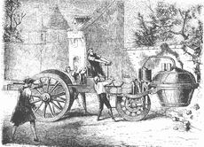

| inicio | | | | | @ | ||
La máquina humana
Reviso antiguos mensajes de correo, y encuentro perguntas y respuestas sobre termodinámica máquinas térmicas, y en qué medida el cuerpo humano se puede considerar una máquina térmica, aunque no tome calor de una fuente y convierta parte de él en trabajo, sino que en rigor es una máquina química, ya que casi toda la energía que utiliza proviene de los alimentos ingeridos, y de su combustíon con el oxígeno respirado.
Me pregunta Don Aníbal [1],
entendido en integrales,
derivadas y animales,
esta difícil cuestión
de su enorme colección
de preguntas infernales:¿Las máquinas térmicas tienen
no más que fierros pa’ ver?
¿No pueden máquinas ser
un quirquincho y un carancho,
caimanes, cuises y chanchos,
o un hombre y una mujer?Una máquina sería
cualquier engendro que acete
calor de carbón o cuetes
¡Siempre que entregue un trabajo!
(M'estoy yendo p'al caracho
y ya me metí en un brete).La máquina reversible
es la que a todas ganó
¡La pucha que la tiró!
Créame, que no le miento;
tiene el mayor rendimiento:
el del ciclo de Carnó.Consume poco calor;
su pérdida es diminuta;
(Ya me he extraviáu en la ruta,
y me jui pa' los tomates).
Con una galleta y mate,
da un trabajo ‘e la gran pucha.Al humano ni lo cuente;
gire a derecha o izquierda
como máquina es muy lerda.
¡Es ansí como le digo,
somos máquinas, amigo,
pero máquinas de ... ! [2]
Toda máquina térmica puede convertir en trabajo parte del calor que recibe, pero no todo. La máquina ideal de Sadi Carnot (1796–1832) es la del mayor rendimiento posible, que se calcula como (T2-T1)/T2, donde T1 y T2 son las temperaturas absolutas, en kelvin, de las fuentes entre las que opera la máquina, por ejemplo (400 + 273,16) kelvin en el agua de un reactor nuclear, y (60 + 273,16) kelvin en el enfriador de agua; eso da un rendimiento máximo teórico del 50 por ciento. En la práctica, el rendimiento es menor.
El ciclo de Carnot, reversible (si la máquina marcha al revés, retorna todo a su estado primitivo), consiste en dos transformaciones sin intercambio de calor, intercaladas con dos transformaciones sin variación de la temperatura. Puesto que para transferir el calor hace falta una diferencia de temperatura, las máquinas reales se apartan forzosamente de ese caso ideal.
La máquina humana es, desde el punto de vista termodinámico, de bajo rendimiento. Los seres homeotermos, o de sangre caliente, usamos casi toda la energía que nos proporcionan los alimentos nada más que para mantener constante la temperatura del cuerpo, y por eso, a diferencia de los animales poiquilotermos, o de sangre fría, aprovechamos muy poca energía para realizar trabajo mecánico. La energía eléctrica que pueda producir una persona que pedalee en el gimnasio durante una hora, se compra por menos de diez centavos. Nuestro rendimiento termodinámico no llega al veinte por ciento.
|  | Coche de vapor de Cugnot (1770) y sus dificultades de maniobra. (Paul F. Schurmann, Historia de la física, tomo II, Nova, Buenos Aires, 1946.) |
Se deben mencionar los inconvenientes prácticos y de flete de un secarropas semejante. Tendría un tamaño muy incómodo para departamentos chicos, y un secado de sólo cinco minutos nos haría ir a buscar la ropa escurrida a 22.000 kilómetros de distancia, en regiones remotas donde quizás hablen lenguas desconocidas. Me siento obligado a decir que esto es sólo una idea, una divagación destinada a facilitar el desarrollo de variados puntos de vista, y de ningún modo una propuesta práctica.
-------------
1. Seudónimo de Kico Rabanale, un docente de física de extraños métodos de enseñanza, que incluyen la práctica de desayunar con los alumnos, y la de sobornarlos con golosinas para que estudien.
2. Juego de palabras intraducible si se respeta la rima. En el original aparece un término que significa de muy escaso rendimiento termodinámico, y a la vez despreciable, y de poco valor industrial o utilitario. (N. del T.)
| Publicado originalmente en Divagaciones vanas y ociosas sobre la física, el arte y la cultura, Agustín Rela, Buenos Aires, 2010, Aster Lingua. Se permite su reproducción citando la fuente. Última actualización may-2018. Buenos Aires, Argentina. |